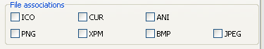

Editing file associations
You can specify which file types should be automatically opened with Greenfish Icon Editor Pro when
double-clicking on their icon in your file manager. To configure the file associations, do the following:
- Open the Help | Preferences dialog box and choose the page Install.

- Select the file types that you want to associate with Greenfish Icon Editor Pro.
(You can also remove an association by removing the appropriate check from the box.)
- Click OK to apply changes.